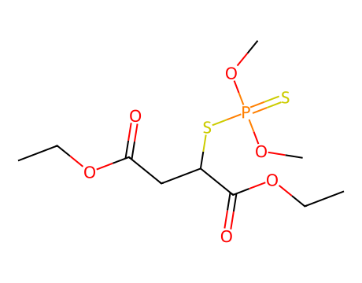
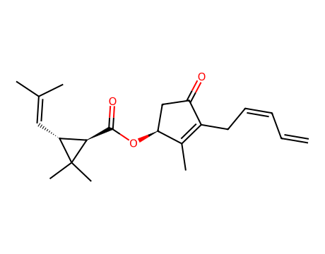
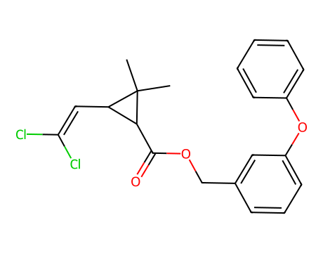
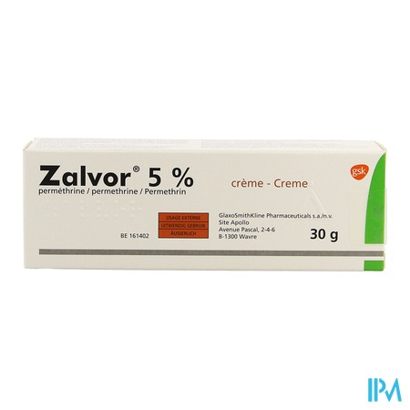

7 molécules3 à dessiner5 concepts4 questions du prof
Chapitre court centré sur les poux (pédiculose) et les insecticides : pyréthrines/perméthrine, organophosphorés, diméticone.
gras souligné = comprendrebleu = DCI + nom commercial + classebleu gras souligné = dessinerrouge = très important
7 molécules (3 à dessiner) · afficher :
Pesticides et immunité (immunomodulateurs, immunosuppresseurs)5 concepts · 7 molécules (3 à dessiner) · p. 273-288
Concepts à comprendre (5)
Pédiculose : plus de médicament enregistré depuis 2018
Depuis novembre 2018, il n'existe plus de traitements enregistrés comme médicaments dans la pédiculose en Belgique. Les options disponibles sont la « méthode du peigne mouillé » (2 séances/semaine pendant 2 semaines, peigne à poux + démêlant) et la diméticone, qui est un dispositif médical.
Pourquoi la pharmacienne ne peut-elle plus conseiller un « médicament » contre les poux ?
Parce qu'aucun traitement n'est plus enregistré comme médicament dans cette indication depuis novembre 2018 : on conseille le peigne mouillé et la diméticone (dispositif médical).
Diméticone : asphyxie du pou
La diméticone (polydiméthylsiloxane) bouche les stigmates respiratoires des poux et des lentes et provoque leur mort par asphyxie ; elle formerait un film asphyxiant autour du pou. Produit non toxique, non susceptible de provoquer des résistances.
Pourquoi la diméticone ne provoque-t-elle pas de résistance chez les poux ?
Parce qu'elle agit physiquement (film qui bouche les stigmates respiratoires → asphyxie) et non sur une cible biochimique que le pou pourrait modifier.
DDT et lindane interdits en Belgique
Le clofénotane (DDT) et le lindane, insecticides organochlorés autrefois utilisés comme antiscabieux, sont aujourd'hui interdits en Belgique. Le DDT est persistant (demi-vie 15 ans), dispersif (retrouvé dans l'Arctique) et biocumulatif (stocké dans les graisses, concentré au sommet de la chaîne alimentaire).
Pourquoi le DDT, pourtant si efficace contre le paludisme, a-t-il été interdit ?
Parce qu'il est persistant (demi-vie de 15 ans), dispersif et biocumulatif : il s'accumule dans les graisses des animaux et dans toute la chaîne alimentaire, d'autant qu'il a été utilisé abusivement en agriculture.
Organophosphorés : inhibiteurs covalents de l'acétylcholinestérase
Les pesticides organophosphorés (parathion, malathion) dérivent de la structure des gaz de combat (tabun, sarin, soman). Ils inhibent l'acétylcholinestérase en formant un lien covalent avec son site actif : l'acétylcholine n'est plus hydrolysée, ce qui aboutit à une paralysie complète et rapide. Antidotes : atropine à forte dose (1 mg) ou pralidoxime (réactivateur des cholinestérases).
Pourquoi l'atropine est-elle utilisée dans une intoxication aux organophosphorés ?
Parce que l'intoxication est due à un excès d'acétylcholine (enzyme bloquée) ; l'atropine, anticholinergique, s'oppose à ses effets, tandis que le pralidoxime réactive l'enzyme.
Pyréthrines naturelles vs perméthrine
Les pyréthrines sont des insecticides naturels extraits des fleurs de pyrèthre, liquides et peu toxiques pour l'homme. La perméthrine est un produit synthétique plus stable : crème à 5 % (ZALVOR) contre la gale et les poux du pubis, et imprégnation des moustiquaires en prévention de la malaria.
Pourquoi utilise-t-on la perméthrine plutôt que les pyréthrines naturelles pour imprégner une moustiquaire ?
Parce que la perméthrine, synthétique, est plus stable que les pyréthrines naturelles : elle persiste sur le tissu.
Pédiculicides physiques (siloxanes) 1 molécule · 1 à dessiner
Noyau : Polymère de siloxane : (CH3)3Si–[O–Si(CH3)2]n–O–Si(CH3)3, motif répété —[O-Si(CH3)2]n—
Mécanisme : Bouche les stigmates respiratoires des poux et des lentes et provoque leur mort par asphyxie ; formerait un film asphyxiant autour du pou lors de l'application locale (p.273).
Indications : Pédiculose (poux) (p.273)
Structure-activité
Pas un insecticide chimique « classique » : polymère organominéral de la famille des siloxanes (chaîne Si–O avec deux méthyles par silicium). Agit physiquement, d'où l'absence de résistance (p.273).
DIMÉTICONE = « DIM la lumière » : elle éteint la respiration du pou (asphyxie) ; c'est physique, donc pas de résistance.
Pesticides organochlorés 2 molécules · 2 à dessiner
Noyau : Thiophosphate P=S avec deux éthoxy et un O-(4-nitrophényle)
Mécanisme : Organophosphoré : inhibe l'acétylcholinestérase en formant un lien covalent avec son site actif → accumulation d'acétylcholine → paralysie (p.275).
Indications : A été utilisé comme pesticide (p.275)
Structure-activité
Organophosphoré à groupement P=S (thiophosphate) ; aryle p-nitro. Dérive structurellement des gaz de combat (tabun, sarin, soman) (p.274).
PARAthion : nitro en PARA du phényle.

Malathionà reconnaître
pas de nom commercial au cours
Pesticides organophosphorés — Phosphorodithioate (ester diméthylique) sur diester éthylique
Noyau : Dithiophosphate (MeO)2P(=S)–S– fixé sur un diester éthylique (succinate)
Mécanisme : Organophosphoré : inhibiteur covalent de l'acétylcholinestérase (p.275).
Indications : « Surtout » utilisé parmi les organophosphorés (p.275)
Structure-activité
Deux soufres (P=S et P–S–C) et deux méthoxy sur le phosphore ; pas de cycle aromatique (≠ parathion). NB : le dessin du cours simplifie le squelette (un seul CH entre les deux esters) ; le malathion réel est un dérivé du succinate de diéthyle (CH–CH2).
MALAthion : « deux S, deux esters » ; c'est celui qu'on a SURTOUT utilisé.
Pyréthrines et pyréthrinoïdes 2 molécules

Pyréthrine Ià reconnaître
pas de nom commercial au cours
Pyréthrines et pyréthrinoïdes — Pyréthrines naturelles (fleurs de pyrèthre)
Noyau : Ester d'un acide cyclopropane-carboxylique (2,2-diméthyl, chaîne vinylique) et d'une cyclopenténone (pyréthrolone)
Formule générale : ester d'acide chrysanthémique (cyclopropane) ; R = CH3 (pyréthrine I) ou COOCH3 (pyréthrine II) (p.276).
PYRÈTHRE = la fleur ; pyréthrine I = Méthyle (R = CH3), II = ester (COOCH3).


ZALVOR
Perméthrineà reconnaître
ZALVOR
Pyréthrines et pyréthrinoïdes — Pyréthrinoïde de synthèse
Noyau : Ester d'acide 3-(2,2-dichlorovinyl)-2,2-diméthylcyclopropanecarboxylique et d'alcool 3-phénoxybenzylique
Mécanisme : Insecticide de la famille des pyréthrines (p.276).
Indications : Gale (p.276), Infestations par poux du pubis (p.276), Moustiquaires imprégnées : prévention des piqûres d'insectes / de la malaria (p.277)
Structure-activité
Analogue synthétique des pyréthrines : dichlorovinyle (C=CCl2) sur le cyclopropane et alcool 3-phénoxybenzylique → plus stable que les pyréthrines naturelles (p.276).
PERMéthrine = PERManente : plus stable que les pyréthrines naturelles ; elle tient sur la moustiquaire.
Ce que le prof a dit en cours
Plus de médicament enregistré contre les poux en Belgique : diméticone (asphyxie mécanique du pou, pas de résistance).
DDT et lindane interdits en Belgique.
Organophosphorés : inhibiteurs covalents de l'acétylcholinestérase.
Pyréthrines naturelles (chrysanthème) vs perméthrine (synthèse, plus stable).
Pourquoi les pesticides dans ce cours : le pharmacien traite la pédiculose (poux) et la gale. Pic des poux en septembre (rentrée, cheveux longs, fenêtres fermées). Gale : acariens qui creusent des sillons dans l'épiderme ; traiter toute la famille et le linge.
Diméticone : polymère de siloxanes (-O-Si(CH3)2-) ; bouche les stigmates respiratoires des poux et des lentes -> asphyxie ; aucun mécanisme pharmacologique, très peu toxique ; peigne à poux sur cheveux mouillés.
DDT = dichlorodiphényltrichloroéthane : synthétisé en 1874, propriétés insecticides découvertes en 1939, prix Nobel de médecine en 1948 ; a éradiqué le paludisme de nombreux pays (millions de vies sauvées). Mais très lipophile, demi-vie ~15 ans, bioaccumulation dans les graisses, dispersé jusqu'en Antarctique, perturbateur endocrinien -> interdit (comme le lindane, neurotoxique). Le prof fait le parallèle avec les PFAS (« polluants éternels »).
Pyréthrines : extraites des fleurs de pyrèthre, très peu toxiques pour l'homme, peu rémanentes ; perméthrine (dérivé stabilisé) : ZALVOR® crème 5 %, une seule application contre la gale, et imprégnation des moustiquaires.
Les questions posées par le prof
Relevées dans tes enregistrements du cours (et ta base Notion « Questions d'Examen »). Le prof : « vous pourrez avoir toutes mes questions d'examen, je vais vous les donner au fur et à mesure ». Les questions marquées « reformulée » reprennent un point que le prof a expliqué en détail ce jour-là, transformé en question. Réponds d'abord sur papier, puis ouvre la réponse pour te corriger.
20/11/2025 · reformuléeComment agit la diméticone contre les poux et pourquoi est-elle si peu toxique ? Voir la réponse
Polymère de siloxanes (huile de silicone) qui forme un film asphyxiant : il bouche les stigmates respiratoires des poux et des lentes. Action purement physique, sans mécanisme pharmacologique, donc pas de résistance ; non absorbée (la diméticone est même utilisée par voie orale comme pansement gastrique).
20/11/2025 · reformuléePourquoi le DDT, qui a sauvé des millions de vies, est-il aujourd'hui interdit ? Voir la réponse
Très lipophile et peu dégradable : demi-vie d'environ 15 ans dans l'environnement, bioaccumulation dans les graisses des animaux et de l'homme, dispersion (retrouvé dans les neiges de l'Antarctique), effets de perturbateur endocrinien et risques de cancers. Interdit en Belgique, comme le lindane.
20/11/2025 · reformuléeQuel est le mécanisme des organophosphorés, leurs symptômes d'intoxication et leur antidote ? Voir la réponse
20/11/2025 · reformuléeComment traite-t-on la gale ? Voir la réponse
Perméthrine (pyréthrinoïde) crème 5 % (ZALVOR®) en une application sur tout le corps ; ou ivermectine per os (voir anthelminthiques) ; traiter l'entourage et le linge.
Fiche de révision au format de l'examen
Examen écrit, 1 h 30 — 10 pages dont 1 de brouillon. Entraîne-toi dans les conditions : réponds sur papier, puis ouvre le corrigé.
Partie 1 — Questions ouvertes (environ 2 pages chacune)
Question 1. Parlez-moi des pesticides utilisés en pharmacie (pédiculose et gale).
Le plan attendu (sous-questions)
Contexte
Organochlorés (historiques)
Organophosphorés
Pyréthrines et pyréthrinoïdes
Diméticone
Corrigé détaillé
Contexte
Pédiculose (poux, rentrée scolaire) et gale (Sarcoptes scabiei, contagieuse) ; traiter l'entourage.
Organochlorés (historiques)
DDT (dichlorodiphényltrichloroéthane) et lindane : neurotoxiques pour l'insecte, très efficaces (DDT et paludisme, Nobel 1948) mais lipophiles, rémanents, bioaccumulés, perturbateurs endocriniens : interdits.
Organophosphorés
Parathion, malathion (et gaz de combat sarin, tabun, soman) : inhibiteurs de l'acétylcholinestérase ; intoxications (syndrome cholinergique) ; antidote pralidoxime + atropine ; usage limité.
Pyréthrines et pyréthrinoïdes
Pyréthrines naturelles des fleurs de pyrèthre, peu toxiques ; perméthrine (ZALVOR® 5 %) contre la gale et pour les moustiquaires.
Diméticone
Seul traitement enregistré contre les poux : siloxane asphyxiant, action physique, peu toxique, pas de résistance.
Partie 2 — QROC (réflexion, réponse courte)
QROC 1. Comment agit la diméticone contre les poux ?
Réponse
C'est une silicone qui enrobe le pou et obstrue ses orifices respiratoires : action physique (asphyxie), sans mécanisme pharmacologique, donc pas de résistance.
QROC 2. Mécanisme des organophosphorés ?
Réponse
Ils phosphorylent de façon covalente la sérine du site actif de l'acétylcholinestérase -> accumulation d'acétylcholine, paralysie de l'insecte (toxiques aussi chez l'homme).
Partie 3 — Tableau de molécules
Comme à l'examen : chaque ligne te donne un indice (structure, DCI ou nom commercial). Complète le reste sur papier ou dans les cases, puis corrige. Structure à dessiner seulement si la molécule est en bleu gras souligné.